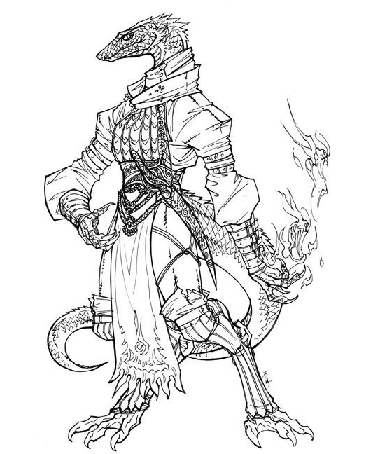
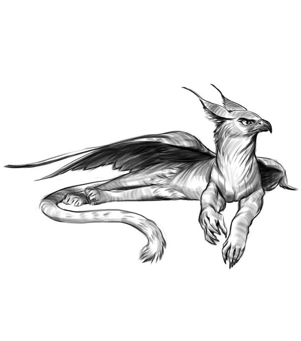

-
Come What May

- Unicorn
-
- Str: 8
- Dex: 8
- Vit: 12
- En: 12
- Special: last resort - resurrects a fallen last standing comrade
-
Milk

- Fairy Dragon
-
- Str: 10
- Dex: 8
- Vit: 11
- En: 11
- Special: may blend with environment; casts mind affecting spells
-
Warrior
- 
- Snakeman the Archmage
-
- Str: 6
- Dex: 12
- Vit: 10
- En: 12
- Special: had mastered four-elemental magic but prefers fire due to its beauty
-
-Forces-
- 
- Young Gryphon
-
- Str: 12
- Dex: 11
- Vit: 8
- En: 9
- Special: strikes twice